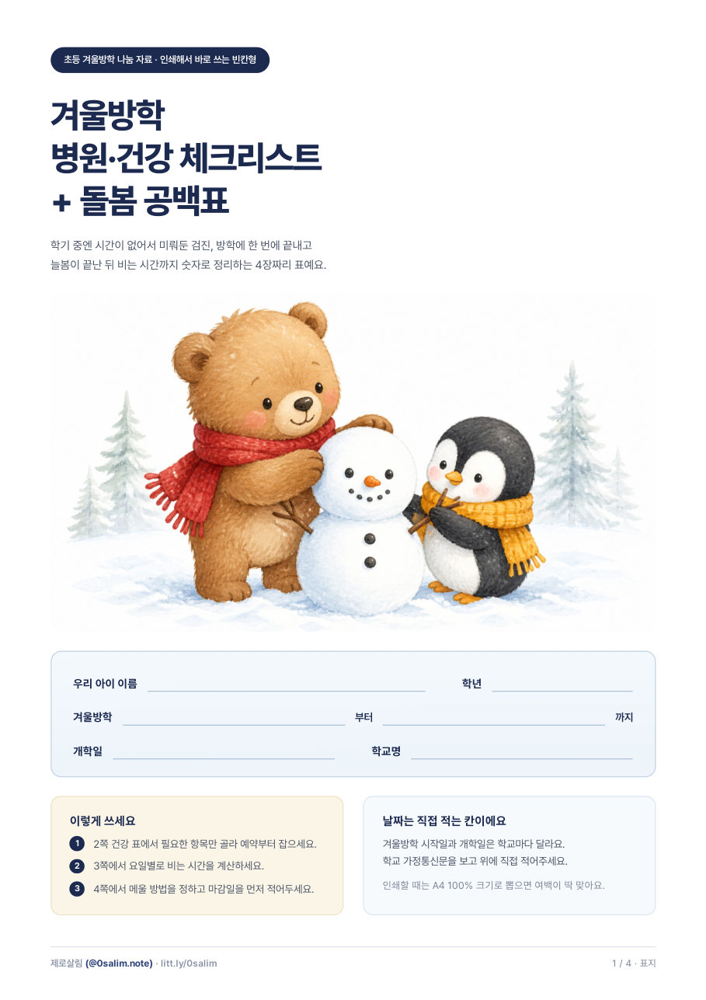
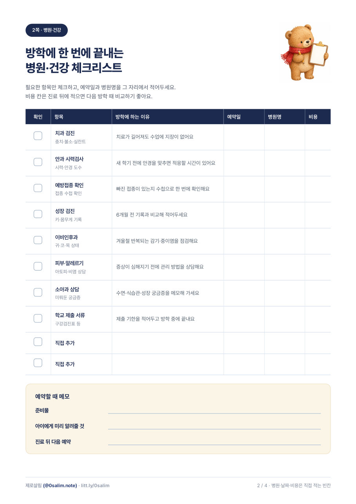
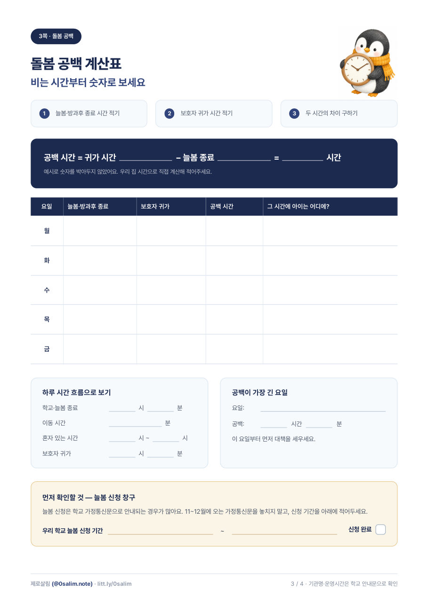
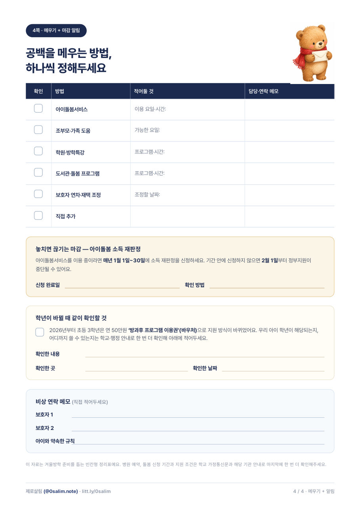

학기 중엔 시간이 없어서 미뤄둔 검진은 방학에 한 번에 끝내고, 늘봄이 끝난 뒤 비는 시간까지 숫자로 정리하는 4장짜리 표예요. 아이 이름·날짜·비용만 직접 적어 쓰시면 됩니다.

A4 4쪽 · 무료 · 회원가입 없음 · 휴대폰에서 바로 열려요
우리 아이 이름, 학년, 겨울방학 시작일·개학일, 학교명을 먼저 적어두세요.

치과, 안과 시력검사, 예방접종 확인, 성장 검진, 이비인후과, 피부·알레르기, 소아과 상담, 학교 제출 서류 — 필요한 항목만 골라 예약일·병원명·비용을 그 자리에서 적어두세요.

늘봄·방과후 종료 시간에서 보호자 귀가 시간을 빼서 요일별 빈 시간을 계산해요. 하루 시간 흐름과 늘봄 신청 기간까지 함께 확인.

아이돌봄서비스, 조부모·가족 도움, 학원 방학특강, 도서관 돌봄, 보호자 연차·재택 중 하나씩 정하고 담당·연락 메모. 아이돌봄 소득 재판정과 초3 방과후 이용권도 확인란에 적어두세요.